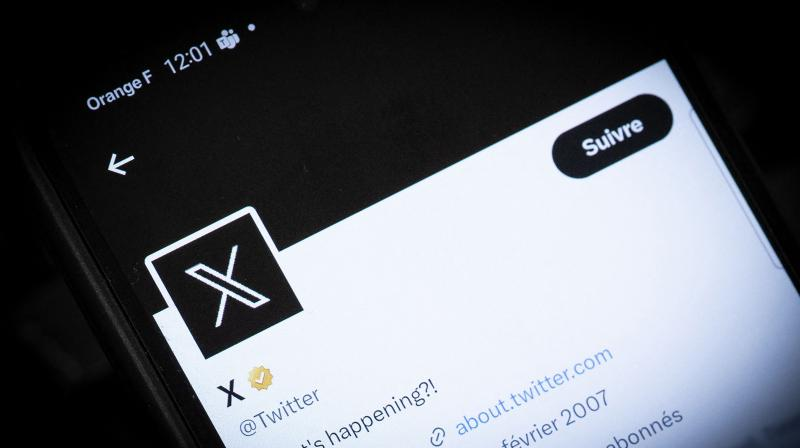
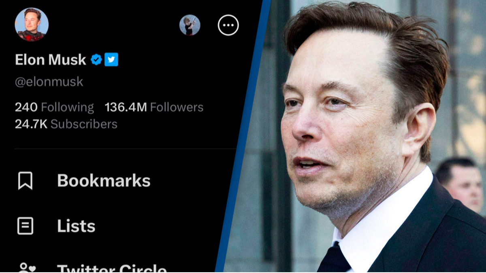

@urstruly_akram

@urstrulymahesh
SSMB 29 #Globetrotting.
@urstruly_akram
CINEMA

@unknown_user
Hello X Fam ! This is a new user

@elon_musk
Now everyone can get a verified blue tick in their profile soon !
